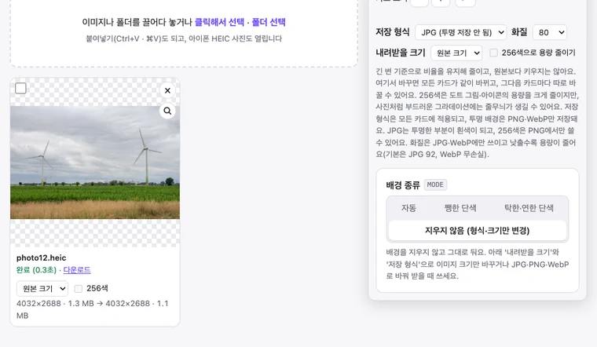
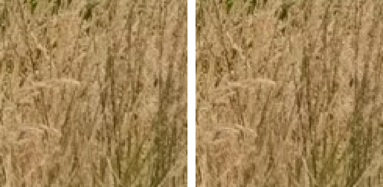

HEIC를 JPG로 변환하기: 아이폰 사진 여러 장 한 번에, 업로드 없이
아이폰으로 찍은 사진은 대부분 HEIC 형식으로 저장됩니다. 아이폰과 맥에서는 잘 열리지만, 윈도우 PC나 일부 웹사이트, 오래된 프로그램에서는 열리지 않거나 올라가지 않습니다. BGPeel에서 HEIC 사진을 여러 장 한 번에 JPG로 바꾸는 방법과, 실제 사진으로 잰 시간과 용량을 정리했습니다.
HEIC가 뭔가요
HEIC는 HEIF라는 이미지 형식에 HEVC(H.265) 압축을 쓴 파일입니다. 애플이 iOS 11부터 아이폰 카메라의 기본 형식으로 쓰고 있습니다. 같은 화질이라면 JPG보다 파일이 작은 것이 장점입니다. 실제로 이 글에서 쓴 사진은 HEIC로 1.3MB였는데, 같은 사진을 BGPeel 기본 화질 JPG로 바꾸니 1.9MB로 약 1.4배가 되었습니다.
단점은 호환성입니다. 크롬·엣지·파이어폭스 브라우저는 HEIC를 직접 열지 못합니다. 이 글을 쓰며 확인한 크롬 155에서도 HEIC는 열리지 않았습니다. 윈도우도 기본 상태로는 열지 못하는 경우가 많아, Microsoft Store에서 확장 프로그램(HEVC 쪽은 유료)을 따로 설치해야 합니다. 쇼핑몰 리뷰, 관공서 서류 제출처럼 JPG·PNG만 받는 곳도 여전히 많습니다.
BGPeel로 변환하는 법
- 위 링크로 들어가면 ‘배경 종류’는 ‘지우지 않음’, ‘저장 형식’은 JPG로 맞춰져 있습니다. 직접 들어갔다면 이 둘을 고르세요.
- HEIC 사진이나 폴더를 끌어다 놓습니다. 여러 장, 하위 폴더까지 한 번에 됩니다. 처음 HEIC를 넣을 때만 변환 도구(전송량 약 600KB)를 한 번 내려받습니다.
- 필요하면 ‘화질’과 ‘내려받을 크기’를 고릅니다. 아래 측정 결과를 참고하세요.
- ‘변환 시작’을 누르고, 카드마다 ‘다운로드’를 누르거나 ‘zip 다운로드’로 한 번에 받습니다. 파일 이름은 그대로 두고 확장자만 .jpg로 바뀝니다.

직접 재 본 시간과 용량
Aaron Rust가 CC0(저작권 없음)로 공개한 HEIC 사진 두 장으로 쟀습니다. 하나는 원본 그대로인 8256×5504(약 4,500만 화소, 4.3MB)이고, 다른 하나는 아이폰 사진과 같은 가로 4032px로 줄여 다시 HEIC로 저장한 4032×2688(1.3MB)입니다. 측정 환경은 Apple M1 맥북의 크롬 155입니다.
| 받는 설정 | 4032×2688 (HEIC 1.3MB) | 8256×5504 (HEIC 4.3MB) |
|---|---|---|
| JPG 기본 화질(92), 원본 크기 | 1.9MB | 8.3MB |
| JPG 화질 80, 원본 크기 | 1.1MB | 4.6MB |
| JPG 화질 60, 원본 크기 | 756KB | 2.8MB |
| JPG 화질 80, 2048px | 320KB | 296KB |
| JPG 화질 80, 1024px | 95KB | 78KB |
| 여는 시간 / 변환 시간 | 0.9초 / 0.35초 | 4.1초 / 1.6초 |
여는 시간은 사진을 넣고 카드에 미리보기가 뜰 때까지이며, 처음 한 번은 변환 도구를 내려받는 시간이 포함됩니다. 한 장에 1초 안팎이고, 컴퓨터에서는 여러 장을 동시에 처리합니다. 4,500만 화소처럼 아주 큰 사진은 메모리를 많이 써서 휴대폰에서는 느릴 수 있습니다.
화질은 얼마로 할까
원본 크기 그대로 기본 화질(92)로 바꾸면 위 표처럼 HEIC보다 커집니다. HEIC가 원래 더 효율적인 형식이라 생기는 일이고, 정상입니다. 용량을 HEIC와 비슷하게 맞추고 싶다면 화질 80이 알맞았습니다. 4032×2688 사진에서 화질 80 JPG는 1.1MB로 원래 HEIC(1.3MB)보다 조금 작았습니다.
그러면 화질은 얼마나 달라질까요? 아이폰 사진 앱에서 보는 모습과 같은 맥OS의 HEIC 해석 결과를 기준으로, BGPeel이 기본 화질로 만든 JPG를 비교했더니 픽셀당 평균 차이는 1.0단계(0~255 기준)였습니다. 눈으로는 구분할 수 없는 수준입니다.

메신저로 보내거나 블로그에 올릴 사진이라면 ‘내려받을 크기’를 2048px로 함께 줄이는 것이 가장 효과가 큽니다. 화질 80, 2048px로 받으면 320KB로, 원래 HEIC의 4분의 1 수준이 됩니다. 용량을 줄이는 방법은 이미지 용량 줄이기에서 더 자세히 다룹니다.
변환할 때 알아 둘 점
- 회전·뒤집기: 아이폰은 사진을 돌려 찍었을 때 그 방향 정보를 따로 저장합니다. BGPeel은 이 정보를 반영해 바로 선 방향으로 바꿉니다. 국제 표준 시험 파일 중 회전(90°), 뒤집기, 회전과 자르기, 타일로 나뉜 사진을 맥OS의 해석 결과와 비교해 모두 같은 방향·크기로 나오는 것을 확인했습니다.
- 위치·날짜 정보: 변환한 JPG에는 촬영 위치(GPS), 카메라 정보, 촬영 날짜 같은 메타데이터가 들어가지 않습니다. 위치가 드러나지 않아 공유하기에는 안전하지만, 사진 앱에서 촬영 날짜순으로 정리할 원본 보관용이라면 HEIC 원본을 함께 두세요.
- 색 공간: 아이폰 사진은 대개 일반 sRGB보다 넓은 Display P3 색 공간을 씁니다. 변환한 JPG에는 이 색 공간 정보를 담지 않아서, 넓은 색역 화면에서 원본과 나란히 보면 아주 진한 빨강·초록이 조금 덜 진해 보일 수 있습니다.
- 라이브 포토·연속 사진: 라이브 포토는 사진(HEIC)과 짧은 영상이 따로 저장되는데, 사진만 변환됩니다. 한 파일에 여러 장이 든 HEIC는 대표 사진 한 장을 변환합니다.
- 업로드 없음: 사진은 서버로 올라가지 않고 이 브라우저 안에서만 처리됩니다. 위치 정보가 든 개인 사진도 기기 밖으로 나가지 않습니다.
아이폰에서 처음부터 JPG로 받는 방법
변환 자체를 피하고 싶다면 아이폰 설정을 바꿀 수 있습니다. ‘설정 → 카메라 → 포맷’에서 ‘높은 호환성’을 고르면 이후 사진이 JPG로 저장됩니다. 대신 사진 한 장의 용량이 커집니다. 또 ‘설정 → 사진’ 맨 아래의 ‘Mac 또는 PC로 전송’을 ‘자동’으로 두면, 케이블로 PC에 옮길 때 호환되는 형식으로 바꿔서 보냅니다. 이미 찍어 둔 HEIC 사진이 많거나 메일·메신저로 받은 HEIC 파일이라면 BGPeel로 한 번에 바꾸는 편이 빠릅니다.
자주 묻는 질문
- 몇 장까지 한 번에 되나요?
- 정해진 제한은 없습니다. 폴더째 넣으면 하위 폴더까지 들어가고, zip으로 받을 때 폴더 구조가 유지됩니다. 사진이 아주 많으면 기기 메모리에 따라 느려질 수 있으니 수백 장 단위로 나눠 넣는 것을 권합니다.
- PNG나 WebP로도 바꿀 수 있나요?
- 네. ‘저장 형식’에서 PNG나 WebP를 고르면 됩니다. 사진은 PNG로 바꾸면 용량이 매우 커지므로, 용량을 줄이려면 JPG나 화질을 정한 WebP가 알맞습니다.
- 휴대폰에서도 되나요?
- 됩니다. 다만 휴대폰은 메모리를 아끼려고 한 장씩 차례로 처리해서 컴퓨터보다 느립니다.
- 무료인가요?
- 네, 장 수 제한이나 워터마크 없이 무료입니다. 사이트는 광고로 운영됩니다.